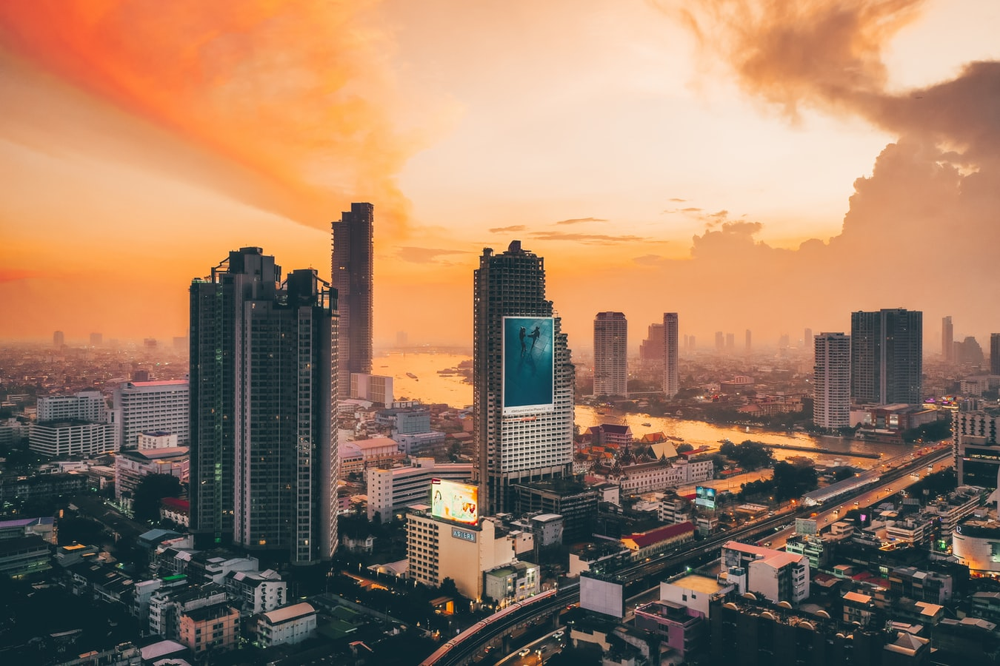

태국의 수도이자 세상에서 가장 긴 이름을 가진 도시로 기네스북에도 오르기도 한 방콕의 태국 내 공식 이름은 '끄룽텝 마하나컨 보원 랏따나꼬신…위쓰누 깜쁘라씻' 으로 일흔 글자나 된다. 방콕은 톤부리 시대 지역을 의미하는 ‘방꺽’이 서양에 알려져 지금까지 쓰이고 있다. 간단히 줄여 ‘끄룽텝’ 이라 부르는데 도시를 뜻하는 ‘끄룽’과 천사를 뜻하는 ‘텝’이 합쳐진 말로 ‘천사들의 도시’라고 불린다. 1782년 짝크리(Chakri) 왕조의 라마1세에 의해 태국의 수도로서 세워졌으며, 200년이 넘는 시간 동안 방콕의 수도로 이어오고 있다. 방콕은 1,500㎢가 넘는 지역으로 태국 인구의 1/10 이 방콕에 거주하고 있다. 또한 방콕의 신공항인 수완나폼 공항(Suvarnabhumi Airport)은 동남아시아 교통의 허브로써의 역할도 톡톡히 하고 있다
방콕에는 별처럼 많은 숙소가 있고 그 수준들 또한 매우 국제적이다. 방콕의 숙소의 매력은 같은 동남아시아권인 홍콩, 싱가포르의 숙소에 비하면 매우 저렴하게 이용할 수 있다는 것에 있다. 물론 하루에 수 백 불을 훌쩍 넘는 초특급 호텔부터 단 돈 몇 천 원하는 게스트하우스까지 그 선택의 폭은 상당히 다양해서 여행의 성격에 맞는 다양한 선택이 가능하다. 또한 동남아시아 최고의 대도시답게 다양한 음식문화를 즐길 수 있다. 이태리, 프랑스, 멕시코, 중국 등 수준 높은 각국의 레스토랑들이 포진해 있고 싱싱한 해산물 식당도 지천이다. 골목골목 숨어 있는 노점 식당들과 야시장의 먹을거리도 방콕만의 즐거움이니 한마디로 오감이 즐거운 식도락 천국이다. 무엇보다 빠질 수 없는 방콕의 매력은 스파나 마사지를 받기에도 최고의 환경을 갖고 있다는 것이다. 건물 하나마다 마사지 숍이나 스파가 있을 정도로 선택의 폭이 다양하고 그 수준이나 실력에 비해 가격은 놀랍도록 저렴하다. 물론 방콕의 멋진 관광지들도 빠지면 섭섭하다. 금박 장식 화려한 왕궁이나 사원 등의 관광지들과 각각의 개성 넘치는 거리들을 걸으면서 보고, 즐기는 여행, 낮과 밤이 모두 즐거운 천사들의 도시!
하늘을 찌르며 서 있는 최첨단 빌딩들과 그 사이로 무허가 주택들이 아무렇지도 않게 들어서 있고, 고급 레스토랑이 즐비한 거리에 당당하게 인도를 점유하고 있는 노점상들, 거리를 메운 매캐한 공해와 빡빡한 차량들로 처음 접한 방콕은 현기증이 일지도 모른다. 하지만 그 아찔한 에너지가 매력이 되는 도시, 한 번 빠지면 그 매력에서 헤어나기 힘든 도시, 바로 그곳이 방콕이다.